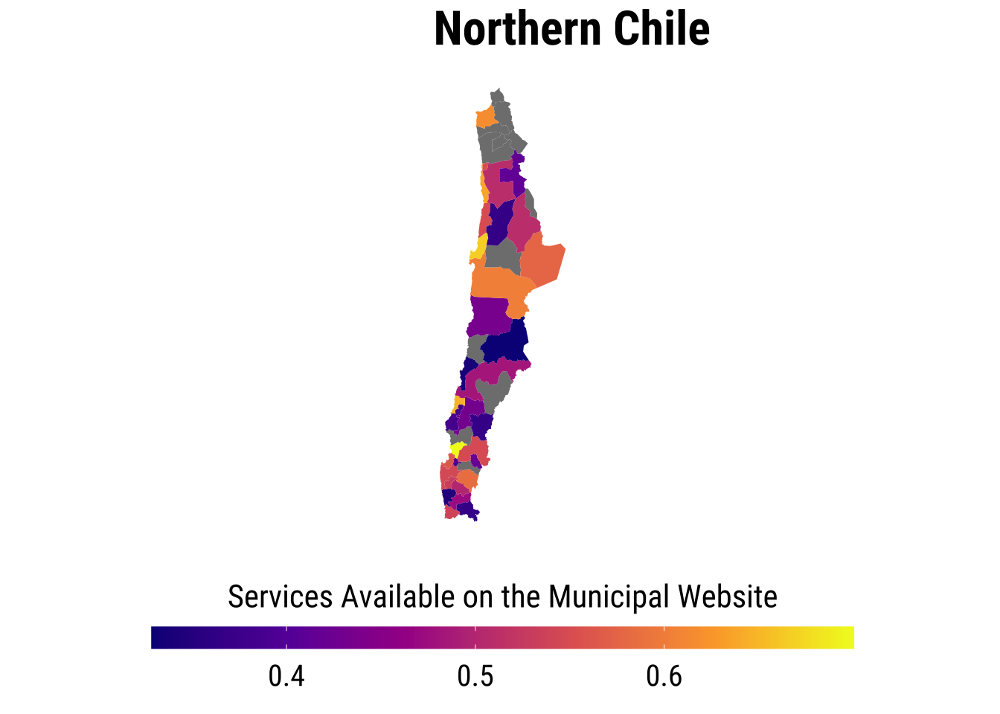
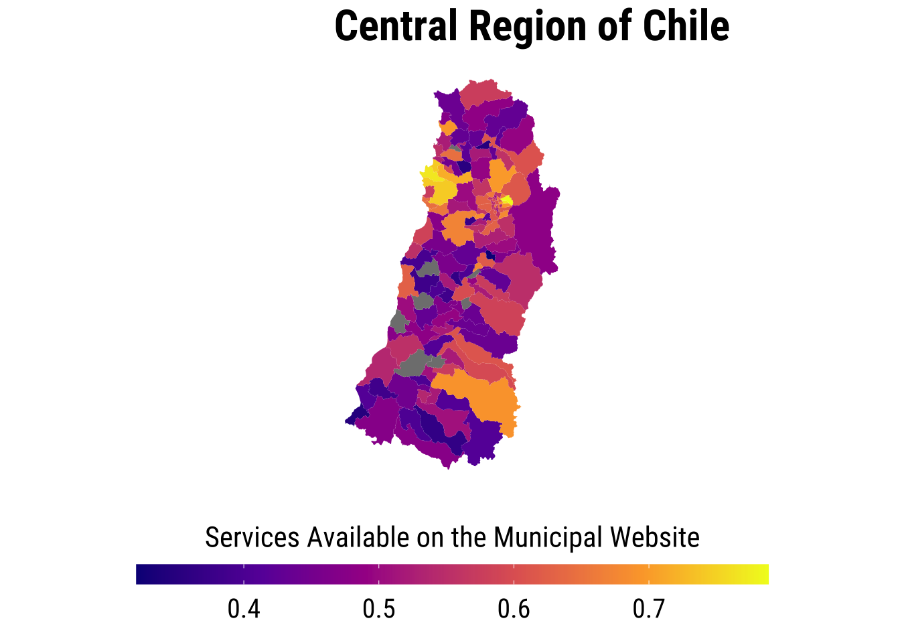
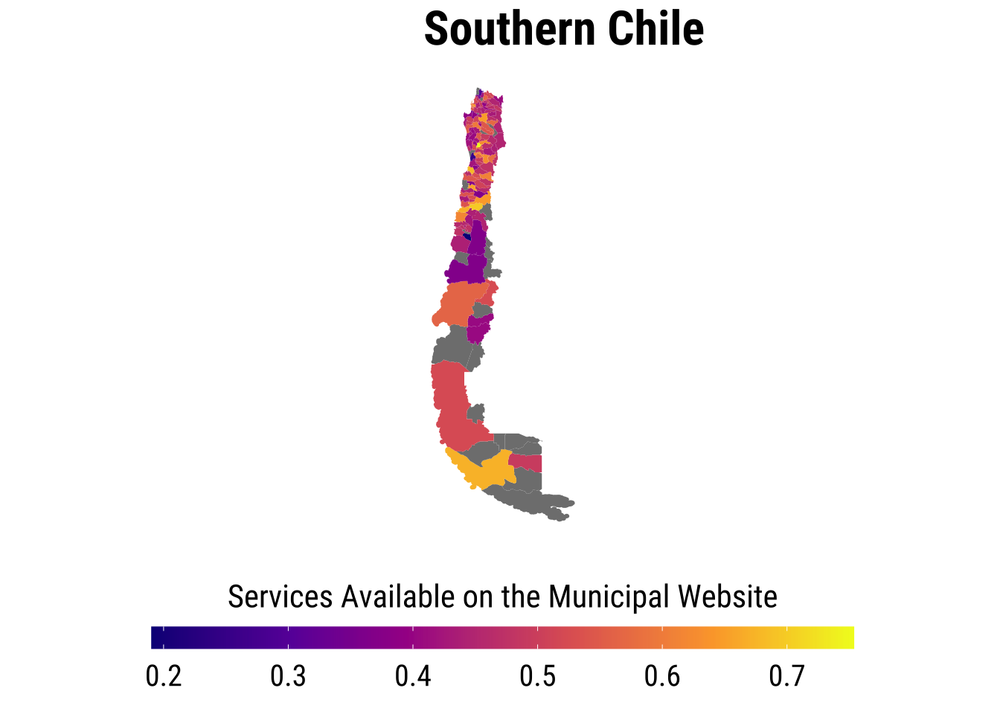
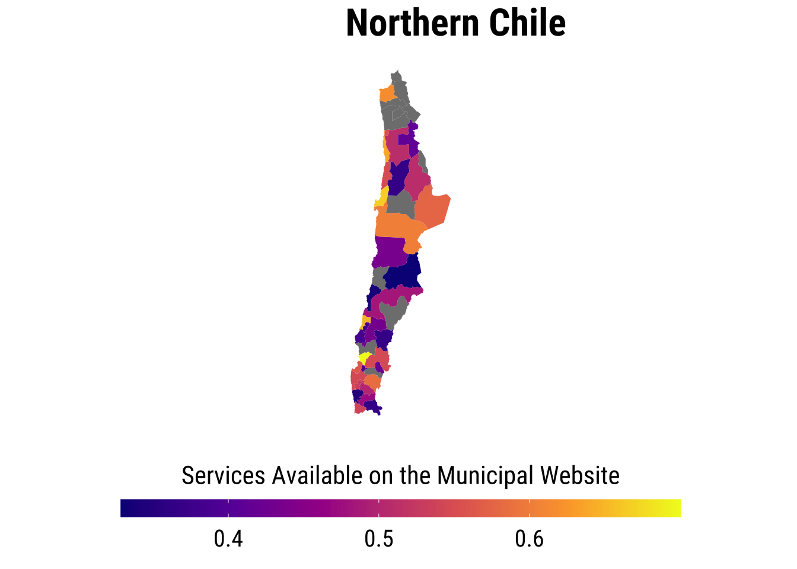
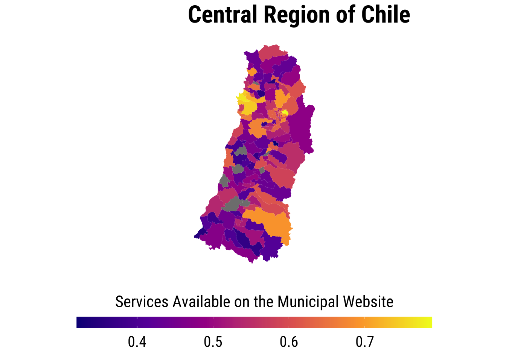
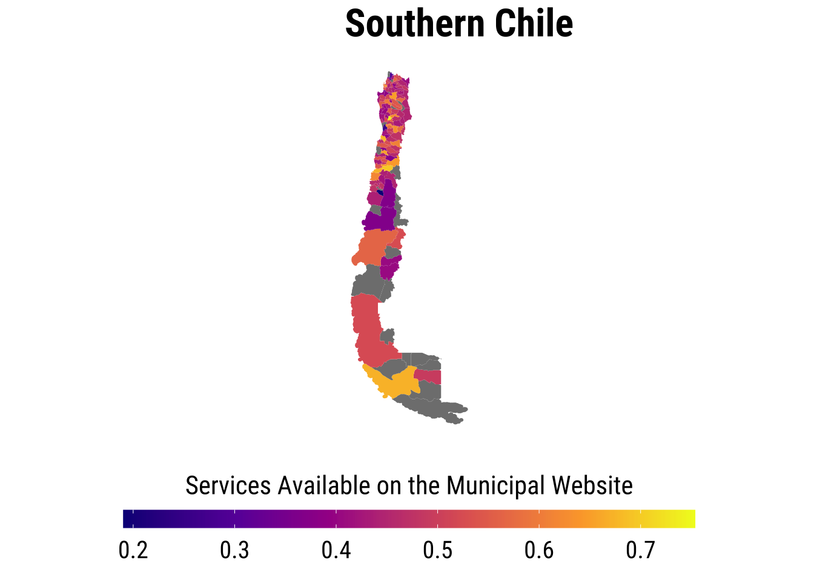
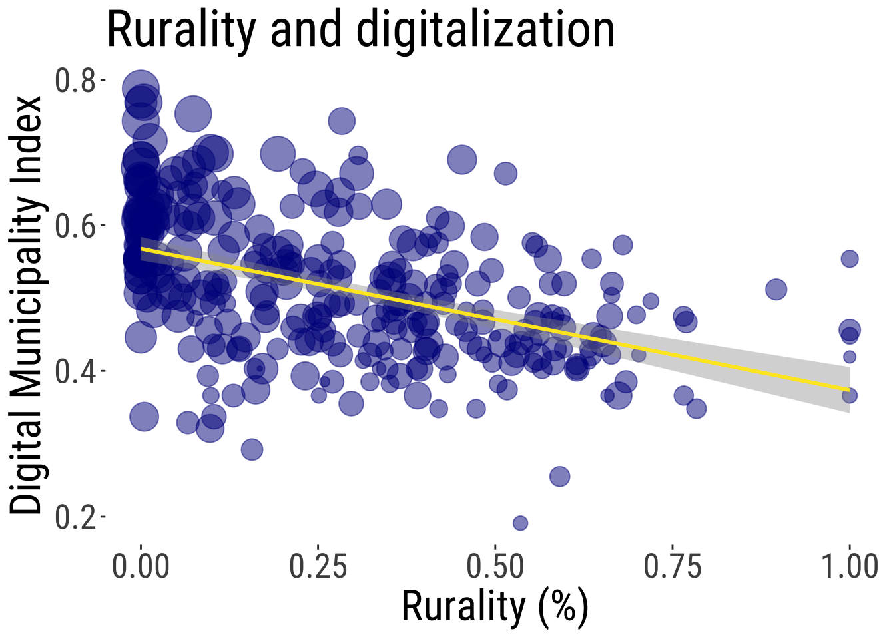
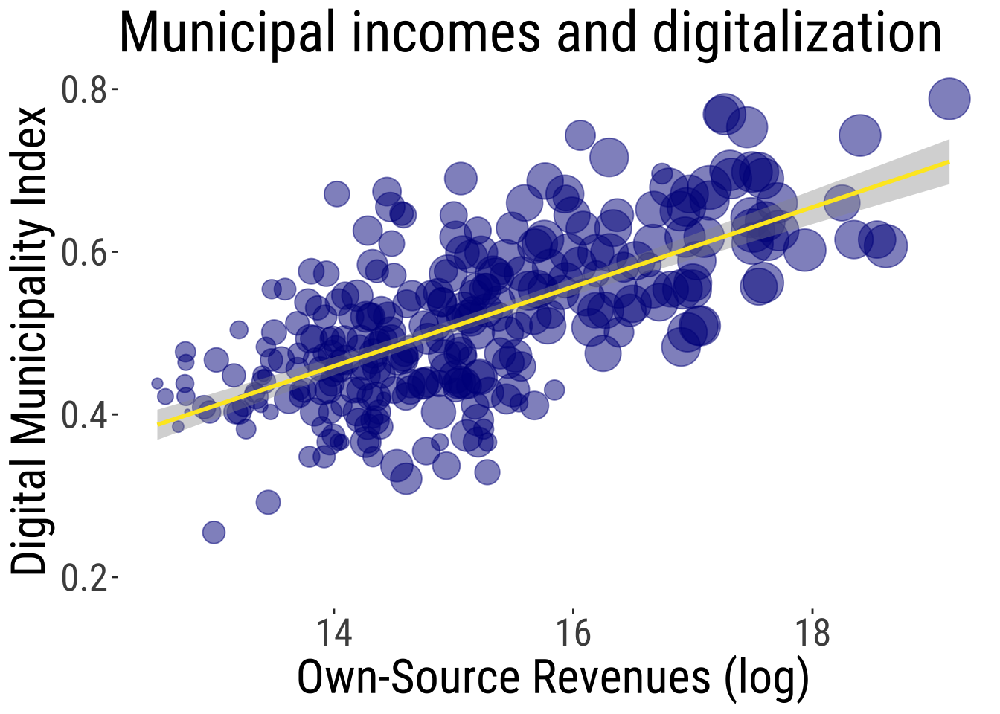
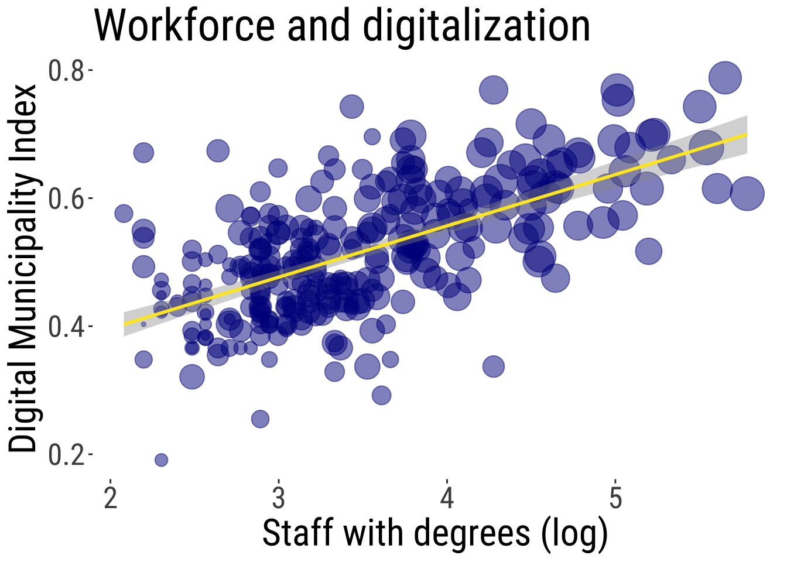
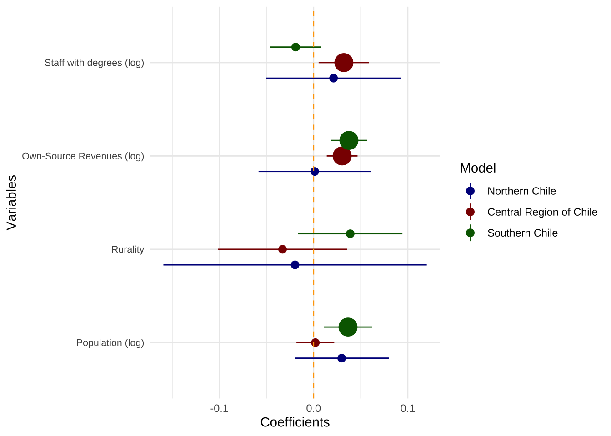

Pedro Fierro Ellen Helsper
This paper analyses the elements and contextual factors related to the digitalisation of local governments and examines the impacts of municipal digitalisation on political engagement—both attitudinal and behavioural. Our findings are twofold. First, at the national level, considering 343 local administrations, the results suggest that population size, rurality, municipal income, and professional workforce are associated with the level of digitalisation in each municipality, though these relationships vary by region. In southern Chile, population size and municipal income appear more influential, whereas in central Chile, income and workforce factors play a greater role. Second, based on 9,924 face-to-face cases collected in Chile’s Valparaíso region from 2018 to 2024, results indicate that living in a digitalised municipality positively and meaningfully influences not only the likelihood of using digital services but also the belief that the Internet empowers citizens politically. Conversely, living in a municipality with a wealthy local government shows an opposite relationship, suggesting that it is not necessarily the budget but rather the efforts toward digitalisation that are crucial for enhancing local engagement. These findings are important for understanding democratisation and the role of local government modernisation, as well as for addressing the causes and direct consequences of digital inequalities.
Keywords: local governments; digital inequalities; democratisation; civic engagement; online participation
One of the major challenges faced by both emerging and established democracies is the modernization of local governments, with digitalization as a core component. Digitalization not only aims to make processes more efficient and faster but also seeks to bring the entire state structure closer to individuals, potentially fostering higher levels of civic engagement. Increasingly, research suggests that citizens in “left-behind” areas experience greater political disengagement and negative sentiments toward politics and its processes. Chile, our case study, is no exception, especially given the pronounced centralism that has long shaped the state, resulting in diverse citizen experiences depending on geographic location. Within this context, digitalization has become a priority for policymakers; however, its broader consequences are not always fully appreciated.
This paper has a dual objective. First, it seeks to identify the factors that may explain the digitalisation of local governments. Second, it examines, at an individual level, the effects of these digitalisation processes on political engagement, both in terms of attitudes and behaviours.
To achieve these objectives, we use official data from the Chilean government and the Digital Municipal Index, recently developed by the Millennium Nucleus of Inequalities and Digital Opportunities (NUDOS). Additionally, to analyse the phenomenon at the individual level, we draw on survey data from 9,924 face-to-face interviews conducted by Fundación P! ensa in the Valparaíso region of Chile. Our findings are twofold. First, at the national level, examining 343 local administrations, results suggest that population size, rurality, municipal income, and professional workforce are associated with the level of digitalisation in each municipality, though these relationships vary by region. In southern Chile, population size and municipal income appear more influential, while in central Chile, income and workforce factors are more critical. Second, at the individual level, results indicate that individuals living in a municipality with a digitalised local government are more likely to use official digital services and, more importantly, are more inclined to believe that the Internet empowers citizens politically. Conversely, living in a municipality with a wealthy local government shows an opposite relationship, suggesting that it is not necessarily the budget but rather the efforts toward digitalisation that are crucial for enhancing local engagement.
These findings contribute not only to understanding the causes and consequences of digitalisation processes in an emerging democracy like Chile but also offer insight into the impact of digital inequalities. Since the beginning of the “electronic revolution,” the Internet was envisioned as a tool to transcend physical boundaries and foster the inclusion of politically marginalised areas. Over time, however, the reinforcement thesis—suggesting that offline inequalities are simply replicated online—has gained traction. The results of this study offer pathways for achieving greater inclusion in the digital age.Al data considered in this study is publicly available.
First, municipal-level data was considered, covering the 343 mainland municipalities of Chile (excluding Juan Fernández and Easter Island).
Digital Municipality Index. The level of digitalization was measured using the Digital Municipality Index, developed by the Millennium Nucleus of Inequalities and Digital Opportunities (NUDOS). The index is based on 34 potential services offered by municipal websites. These 34 services were grouped into two categories: “Payments, procedures, and online services,” which includes 13 activities, and “Information and transparency,” which includes 21 activities.
Population. Population was measured as the projected number of people living in each municipality in 2023, expressed in log terms. The data comes from the National Municipal Information System (SINIM).
Municipal Income. Municipal income was measured as own-source revenues, meaning the income generated independently by each municipality, expresed in log terms. The data comes from the National Municipal Information System (SINIM).
Rurality. Rurality was measured as the percentage of the population living in rural areas within each municipality in 2023. This data was also obtained from the National Municipal Information System (SINIM).
Qualified Municipal Workforce. To capture the professional resources of each municipality, the number of employees with a university degree was considered, expressed in log terms. The data comes from the National Municipal Information System (SINIM).
Secondly, we use data from the Political Opinion Survey (EOP), developed by Fundación P!ensa and conducted with IPSOS and Datavoz-STATCOM. This paper considers seven iterations of the survey from 2018 to 2024, encompassing 9,924 face-to-face interviews conducted in the ten largest cities in the Valparaíso region of Chile. The survey employs a probabilistic, non-proportional design with a three-stage random sampling method (by block, household, and individual), targeting men and women aged 18 and older.
Online Political Efficacy. To measure online political efficacy, we follow the approach proposed by Sasaki (2016, 2017), asking respondents to indicate their agreement with the following statements:
Each of these questions was measured on a 5-point Likert scale, where 1 indicated strong disagreement and 5 indicated strong agreement.
Awareness and Use of Municipal Website. To measure specific uses of the official local government website, respondents were asked to indicate their agreement with the following statements:
Living in a Digitalized Municipality. To examine contextual factors that may influence our variables of interest, we included a variable to determine whether individuals live in a highly or minimally digitalized municipality. Specifically, the value of the Digital Municipality Index (measured at the municipal level) was assigned to individuals based on their place of residence. To prevent misinterpretations and ecological fallacies, it is essential to clarify that this variable represents an individual-level attribute: living in a municipality with a strong digital services offering.
Living in a Wealthy Municipality. Additionally, we considered the impact of residing in a wealthy municipality. This was measured by assigning the Municipal Income level to individuals based on their municipality of residence. Similar to the previous variable, it is important to emphasize that this measure does not reflect individual income (as we have a separate socioeconomic variable described in the following sections); rather, it captures only the effect of living in a municipality classified as affluent or economically disadvantaged.
Political Interest. Political interest was measured using a self-reported approach. Specifically, all respondents were asked how interested they were in the following areas:
Each question was measured on a 4-point Likert scale, where 1 indicated ‘no interest’ and 4 indicated ‘strong interest.’ Using confirmatory factor analysis (CFA), a factor for political interest was constructed from these responses (Cronbach’s alpha: 0.86).
Control Variables Various sociodemographic variables were included as control variables, such as age, education, gender, and socioeconomic status.
First, the analyses focused on the national context, using aggregated data at the municipal level. Starting with a descriptive approach (see Figure 2) to examine the Digital Municipality Index, we observe an apparent relationship between population size, rurality, income, and workforce professionalisation in each municipality. The distribution of the index shows that more urban, densely populated municipalities with a more qualified workforce tend to score higher. However, an inferential approach provides a slightly different perspective. While municipal income appears to be the most important factor explaining a higher digitalisation index, rurality and the formal qualifications of the municipal workforce do not have significant coefficients. Population, though close to significance, also plays a role. Thus, the results suggest that the most populated and wealthiest municipalities tend to offer more digital services to their residents (see Table 1).
Moreover, in the context of a highly centralised country, these results vary when analysing different regions separately. In southern Chile, population size and municipal income appear to be more influential, whereas in central Chile, income and workforce factors play a greater role (see Figure 3).
Figure 1 Digital Municipality Index



Figure 2. Dispersion diagram of the Digital Municipality Index, considering population, rurality, municipal income and quaified municipal workforce.



Table 1 OLS for Digital Municipality Index at the municipal level
Call:
lm(formula = Municipio_Digital ~ log_Poblacion.y + Pob_Rural_Porc +
log_Ingresos_Propios_Permanentes + log_Num_Planta_Profes,
data = merged_data)
Residuals:
Min 1Q Median 3Q Max
-0.176363 -0.050995 -0.000819 0.043321 0.220699
Coefficients:
Estimate Std. Error t value Pr(>|t|)
(Intercept) -0.165083 0.079892 -2.066 0.0397 *
log_Poblacion.y 0.016171 0.008789 1.840 0.0669 .
Pob_Rural_Porc 0.002764 0.025464 0.109 0.9136
log_Ingresos_Propios_Permanentes 0.030322 0.006985 4.341 1.99e-05 ***
log_Num_Planta_Profes 0.015231 0.011154 1.366 0.1732
---
Signif. codes: 0 '***' 0.001 '**' 0.01 '*' 0.05 '.' 0.1 ' ' 1
Residual standard error: 0.07304 on 278 degrees of freedom
(60 observations deleted due to missingness)
Multiple R-squared: 0.4639, Adjusted R-squared: 0.4562
F-statistic: 60.15 on 4 and 278 DF, p-value: < 2.2e-16
Call:
lm(formula = Municipio_Digital ~ log_Poblacion.y + Pob_Rural_Porc +
log_Ingresos_Propios_Permanentes + log_Num_Planta_Profes,
data = md_north)
Residuals:
Min 1Q Median 3Q Max
-0.172945 -0.062475 -0.001547 0.052815 0.181538
Coefficients:
Estimate Std. Error t value Pr(>|t|)
(Intercept) 0.107520 0.382362 0.281 0.781
log_Poblacion.y 0.029862 0.030354 0.984 0.336
Pob_Rural_Porc -0.019628 0.085000 -0.231 0.820
log_Ingresos_Propios_Permanentes 0.001218 0.036246 0.034 0.973
log_Num_Planta_Profes 0.021216 0.043438 0.488 0.630
Residual standard error: 0.09674 on 22 degrees of freedom
(17 observations deleted due to missingness)
Multiple R-squared: 0.3352, Adjusted R-squared: 0.2143
F-statistic: 2.773 on 4 and 22 DF, p-value: 0.05255
Call:
lm(formula = Municipio_Digital ~ log_Poblacion.y + Pob_Rural_Porc +
log_Ingresos_Propios_Permanentes + log_Num_Planta_Profes,
data = md_centre)
Residuals:
Min 1Q Median 3Q Max
-0.154499 -0.058198 -0.006089 0.047512 0.203650
Coefficients:
Estimate Std. Error t value Pr(>|t|)
(Intercept) -0.064568 0.129568 -0.498 0.61907
log_Poblacion.y 0.001935 0.012211 0.158 0.87432
Pob_Rural_Porc -0.032916 0.041531 -0.793 0.42944
log_Ingresos_Propios_Permanentes 0.030329 0.009939 3.051 0.00275 **
log_Num_Planta_Profes 0.032186 0.016297 1.975 0.05034 .
---
Signif. codes: 0 '***' 0.001 '**' 0.01 '*' 0.05 '.' 0.1 ' ' 1
Residual standard error: 0.07676 on 133 degrees of freedom
(13 observations deleted due to missingness)
Multiple R-squared: 0.4533, Adjusted R-squared: 0.4368
F-statistic: 27.56 on 4 and 133 DF, p-value: < 2.2e-16
Call:
lm(formula = Municipio_Digital ~ log_Poblacion.y + Pob_Rural_Porc +
log_Ingresos_Propios_Permanentes + log_Num_Planta_Profes,
data = md_south)
Residuals:
Min 1Q Median 3Q Max
-0.165738 -0.034722 0.001215 0.035254 0.187039
Coefficients:
Estimate Std. Error t value Pr(>|t|)
(Intercept) -0.37230 0.11127 -3.346 0.00111 **
log_Poblacion.y 0.03658 0.01546 2.366 0.01967 *
Pob_Rural_Porc 0.03894 0.03369 1.156 0.25018
log_Ingresos_Propios_Permanentes 0.03756 0.01173 3.201 0.00178 **
log_Num_Planta_Profes -0.01899 0.01658 -1.145 0.25462
---
Signif. codes: 0 '***' 0.001 '**' 0.01 '*' 0.05 '.' 0.1 ' ' 1
Residual standard error: 0.0624 on 113 degrees of freedom
(30 observations deleted due to missingness)
Multiple R-squared: 0.5043, Adjusted R-squared: 0.4868
F-statistic: 28.74 on 4 and 113 DF, p-value: < 2.2e-16Figure 3. OLS for Digital Municipality Index at the municipal level

Secondly, the specific case of the Valparaíso region in Chile was analysed using individual-level data. In this context, the aim was to test whether municipal digitalisation affects online political engagement by examining both attitudinal and behavioural components. The attitudinal component presents a complex picture (see Table 2). Living in a digitalised municipality does not appear to impact online political efficacy—defined as individuals’ beliefs that the internet empowers citizens politically. However, the other contextual factor, living in a wealthy municipality, shows a negative and significant relationship with these attitudes. In other words, individuals in marginalised areas with poorer municipalities tend to view the Internet as a valuable tool for enhancing their political voice.
Interestingly, the influence of a digitalised municipality changes when analysing specific measures of online political efficacy. Specifically, results indicate that the digitalisation of local government has a positive and significant relationship with OPE1, or the belief that “by using the internet, people like me have more political power.”
Regarding the behavioural dimension of online local participation, the results are consistent and robust (see Table 3). Living in a digitalised municipality has a positive and significant relationship with all measures of awareness and use of the official municipal website, a pattern not observed for residents of wealthy municipalities. In fact, while the relationship with living in a wealthy municipality is significant, it is in the opposite direction. In other words, the results suggest that it is not necessarily the budget but rather the efforts toward digitalisation that are crucial for enhancing local engagement.
Table 2 OLS for Online Political Efficacy at the Individual Level
Call:
lm(formula = ope ~ dig_mun + ingresos + sex + age + SES + education +
intpol + factor(year), data = EOP_nona)
Residuals:
Min 1Q Median 3Q Max
-2.08622 -0.58347 -0.02698 0.60450 2.74480
Coefficients:
Estimate Std. Error t value Pr(>|t|)
(Intercept) 0.2999464 0.1682358 1.783 0.074638 .
dig_mun 0.1589623 0.1185248 1.341 0.179899
ingresos -0.0255358 0.0124663 -2.048 0.040551 *
sex -0.1220766 0.0178198 -6.851 7.85e-12 ***
age -0.0053489 0.0005332 -10.031 < 2e-16 ***
SES 0.0337665 0.0119061 2.836 0.004578 **
education 0.0182781 0.0054471 3.356 0.000795 ***
intpol 0.3904303 0.0193647 20.162 < 2e-16 ***
factor(year)2019 0.0394652 0.0304665 1.295 0.195230
factor(year)2020 0.1795567 0.0308274 5.825 5.93e-09 ***
factor(year)2021 0.2359294 0.0305832 7.714 1.35e-14 ***
factor(year)2022 0.1635415 0.0303031 5.397 6.96e-08 ***
factor(year)2023 0.1761850 0.0308267 5.715 1.13e-08 ***
---
Signif. codes: 0 '***' 0.001 '**' 0.01 '*' 0.05 '.' 0.1 ' ' 1
Residual standard error: 0.8152 on 8774 degrees of freedom
Multiple R-squared: 0.1021, Adjusted R-squared: 0.1009
F-statistic: 83.13 on 12 and 8774 DF, p-value: < 2.2e-16
Call:
lm(formula = ope1 ~ dig_mun + ingresos + sex + age + SES + education +
intpol + factor(year), data = EOP_nona)
Residuals:
Min 1Q Median 3Q Max
-2.2998 -0.8246 -0.2290 0.9393 3.3471
Coefficients:
Estimate Std. Error t value Pr(>|t|)
(Intercept) 2.5749293 0.2390494 10.772 < 2e-16 ***
dig_mun 0.3660069 0.1684141 2.173 0.029788 *
ingresos -0.0234007 0.0177135 -1.321 0.186516
sex -0.1458139 0.0253206 -5.759 8.76e-09 ***
age -0.0043026 0.0007577 -5.679 1.40e-08 ***
SES 0.0436412 0.0169176 2.580 0.009907 **
education 0.0223558 0.0077398 2.888 0.003881 **
intpol 0.4222330 0.0275157 15.345 < 2e-16 ***
factor(year)2019 0.0193999 0.0432905 0.448 0.654068
factor(year)2020 0.1713444 0.0438033 3.912 9.23e-05 ***
factor(year)2021 0.2576296 0.0434563 5.928 3.17e-09 ***
factor(year)2022 0.1484448 0.0430583 3.448 0.000568 ***
factor(year)2023 0.1629771 0.0438023 3.721 0.000200 ***
---
Signif. codes: 0 '***' 0.001 '**' 0.01 '*' 0.05 '.' 0.1 ' ' 1
Residual standard error: 1.158 on 8774 degrees of freedom
Multiple R-squared: 0.06238, Adjusted R-squared: 0.0611
F-statistic: 48.64 on 12 and 8774 DF, p-value: < 2.2e-16
Call:
lm(formula = ope2 ~ dig_mun + ingresos + sex + age + SES + education +
intpol + factor(year), data = EOP_nona)
Residuals:
Min 1Q Median 3Q Max
-2.5974 -0.9203 -0.0625 1.0009 3.2119
Coefficients:
Estimate Std. Error t value Pr(>|t|)
(Intercept) 3.1296660 0.2452538 12.761 < 2e-16 ***
dig_mun 0.1533807 0.1727852 0.888 0.37473
ingresos -0.0267314 0.0181733 -1.471 0.14135
sex -0.1553894 0.0259777 -5.982 2.30e-09 ***
age -0.0067836 0.0007773 -8.727 < 2e-16 ***
SES 0.0345152 0.0173567 1.989 0.04678 *
education 0.0209707 0.0079407 2.641 0.00828 **
intpol 0.5013142 0.0282299 17.758 < 2e-16 ***
factor(year)2019 0.0673183 0.0444141 1.516 0.12963
factor(year)2020 0.2482294 0.0449402 5.524 3.42e-08 ***
factor(year)2021 0.3016648 0.0445841 6.766 1.41e-11 ***
factor(year)2022 0.2228076 0.0441758 5.044 4.66e-07 ***
factor(year)2023 0.2078361 0.0449392 4.625 3.80e-06 ***
---
Signif. codes: 0 '***' 0.001 '**' 0.01 '*' 0.05 '.' 0.1 ' ' 1
Residual standard error: 1.188 on 8774 degrees of freedom
Multiple R-squared: 0.07744, Adjusted R-squared: 0.07617
F-statistic: 61.37 on 12 and 8774 DF, p-value: < 2.2e-16
Call:
lm(formula = ope3 ~ dig_mun + ingresos + sex + age + SES + education +
intpol + factor(year), data = EOP_nona)
Residuals:
Min 1Q Median 3Q Max
-3.1327 -0.8759 0.1353 0.8867 3.3551
Coefficients:
Estimate Std. Error t value Pr(>|t|)
(Intercept) 3.686999 0.237588 15.518 < 2e-16 ***
dig_mun 0.194766 0.167384 1.164 0.244623
ingresos -0.040672 0.017605 -2.310 0.020900 *
sex -0.160489 0.025166 -6.377 1.89e-10 ***
age -0.014171 0.000753 -18.819 < 2e-16 ***
SES 0.043047 0.016814 2.560 0.010479 *
education 0.037125 0.007692 4.826 1.42e-06 ***
intpol 0.515888 0.027348 18.864 < 2e-16 ***
factor(year)2019 0.153620 0.043026 3.570 0.000358 ***
factor(year)2020 0.339778 0.043535 7.805 6.65e-15 ***
factor(year)2021 0.480366 0.043191 11.122 < 2e-16 ***
factor(year)2022 0.394308 0.042795 9.214 < 2e-16 ***
factor(year)2023 0.428002 0.043534 9.831 < 2e-16 ***
---
Signif. codes: 0 '***' 0.001 '**' 0.01 '*' 0.05 '.' 0.1 ' ' 1
Residual standard error: 1.151 on 8774 degrees of freedom
Multiple R-squared: 0.1402, Adjusted R-squared: 0.139
F-statistic: 119.2 on 12 and 8774 DF, p-value: < 2.2e-16
Call:
lm(formula = ope4 ~ dig_mun + ingresos + sex + age + SES + education +
intpol + factor(year), data = EOP_nona)
Residuals:
Min 1Q Median 3Q Max
-1.9118 -0.7808 -0.2592 0.7084 3.2886
Coefficients:
Estimate Std. Error t value Pr(>|t|)
(Intercept) 2.9435991 0.2303437 12.779 < 2e-16 ***
dig_mun -0.0189933 0.1622808 -0.117 0.90683
ingresos -0.0408788 0.0170685 -2.395 0.01664 *
sex -0.0968831 0.0243984 -3.971 7.22e-05 ***
age -0.0003039 0.0007301 -0.416 0.67721
SES 0.0462905 0.0163015 2.840 0.00453 **
education 0.0062274 0.0074580 0.835 0.40374
intpol 0.3693468 0.0265137 13.930 < 2e-16 ***
factor(year)2019 -0.0769218 0.0417139 -1.844 0.06521 .
factor(year)2020 0.0508666 0.0422080 1.205 0.22818
factor(year)2021 0.0447508 0.0418737 1.069 0.28523
factor(year)2022 -0.0211127 0.0414902 -0.509 0.61086
factor(year)2023 0.0586797 0.0422071 1.390 0.16448
---
Signif. codes: 0 '***' 0.001 '**' 0.01 '*' 0.05 '.' 0.1 ' ' 1
Residual standard error: 1.116 on 8774 degrees of freedom
Multiple R-squared: 0.03653, Adjusted R-squared: 0.03521
F-statistic: 27.72 on 12 and 8774 DF, p-value: < 2.2e-16Table 3 OLS for Effective Municipality Webpage use at the Individual Level
Call:
glm(formula = useweb ~ dig_mun + ingresos + sex + age + SES +
education + ope1 + polint1 + factor(year), family = binomial,
data = EOP)
Deviance Residuals:
Min 1Q Median 3Q Max
-2.0881 -0.8979 -0.5130 1.0005 2.4585
Coefficients:
Estimate Std. Error z value Pr(>|z|)
(Intercept) 0.669631 0.463267 1.445 0.14833
dig_mun 2.116871 0.329828 6.418 1.38e-10 ***
ingresos -0.258097 0.034565 -7.467 8.20e-14 ***
sex 0.204991 0.049462 4.144 3.41e-05 ***
age -0.020517 0.001475 -13.910 < 2e-16 ***
SES 0.063337 0.032112 1.972 0.04856 *
education 0.268587 0.015182 17.691 < 2e-16 ***
ope1 -0.001315 0.020926 -0.063 0.94991
polint1 0.388400 0.026798 14.494 < 2e-16 ***
factor(year)2019 0.098047 0.084914 1.155 0.24823
factor(year)2020 0.057333 0.085835 0.668 0.50417
factor(year)2021 0.235920 0.084848 2.781 0.00543 **
factor(year)2022 -0.055524 0.084761 -0.655 0.51242
factor(year)2023 0.239818 0.084472 2.839 0.00453 **
---
Signif. codes: 0 '***' 0.001 '**' 0.01 '*' 0.05 '.' 0.1 ' ' 1
(Dispersion parameter for binomial family taken to be 1)
Null deviance: 12124 on 9006 degrees of freedom
Residual deviance: 10255 on 8993 degrees of freedom
(917 observations deleted due to missingness)
AIC: 10283
Number of Fisher Scoring iterations: 4
Call:
glm(formula = useadm ~ dig_mun + ingresos + sex + age + SES +
education + ope1 + polint1 + factor(year), family = binomial,
data = EOP)
Deviance Residuals:
Min 1Q Median 3Q Max
-1.8200 -1.2337 0.8124 1.0032 1.5395
Coefficients:
Estimate Std. Error z value Pr(>|z|)
(Intercept) -0.716416 0.691695 -1.036 0.30032
dig_mun 0.940059 0.478421 1.965 0.04942 *
ingresos -0.026864 0.050712 -0.530 0.59630
sex -0.359459 0.072696 -4.945 7.63e-07 ***
age 0.002282 0.002407 0.948 0.34320
SES 0.021366 0.045975 0.465 0.64213
education 0.070633 0.022507 3.138 0.00170 **
ope1 -0.086474 0.030155 -2.868 0.00414 **
polint1 0.048174 0.037623 1.280 0.20039
factor(year)2019 0.613936 0.124925 4.914 8.90e-07 ***
factor(year)2020 0.263683 0.123956 2.127 0.03340 *
factor(year)2021 0.868788 0.123201 7.052 1.77e-12 ***
factor(year)2022 0.806193 0.127752 6.311 2.78e-10 ***
factor(year)2023 1.101731 0.126573 8.704 < 2e-16 ***
---
Signif. codes: 0 '***' 0.001 '**' 0.01 '*' 0.05 '.' 0.1 ' ' 1
(Dispersion parameter for binomial family taken to be 1)
Null deviance: 4862.7 on 3598 degrees of freedom
Residual deviance: 4684.1 on 3585 degrees of freedom
(6325 observations deleted due to missingness)
AIC: 4712.1
Number of Fisher Scoring iterations: 4
Call:
glm(formula = useinfo ~ dig_mun + ingresos + sex + age + SES +
education + ope1 + polint1 + factor(year), family = binomial,
data = EOP)
Deviance Residuals:
Min 1Q Median 3Q Max
-2.1817 0.4927 0.6305 0.7316 1.1399
Coefficients:
Estimate Std. Error z value Pr(>|z|)
(Intercept) 0.902743 0.801048 1.127 0.259763
dig_mun 0.451016 0.564165 0.799 0.424035
ingresos -0.063853 0.058809 -1.086 0.277581
sex 0.283502 0.083980 3.376 0.000736 ***
age -0.004302 0.002779 -1.548 0.121538
SES -0.089107 0.055250 -1.613 0.106790
education 0.061198 0.026703 2.292 0.021915 *
ope1 0.004062 0.035378 0.115 0.908587
polint1 0.234622 0.044661 5.253 1.49e-07 ***
factor(year)2019 0.960882 0.149990 6.406 1.49e-10 ***
factor(year)2020 0.199377 0.135176 1.475 0.140228
factor(year)2021 0.507321 0.136087 3.728 0.000193 ***
factor(year)2022 0.602532 0.143986 4.185 2.86e-05 ***
factor(year)2023 0.748354 0.140264 5.335 9.54e-08 ***
---
Signif. codes: 0 '***' 0.001 '**' 0.01 '*' 0.05 '.' 0.1 ' ' 1
(Dispersion parameter for binomial family taken to be 1)
Null deviance: 3811.4 on 3599 degrees of freedom
Residual deviance: 3700.6 on 3586 degrees of freedom
(6324 observations deleted due to missingness)
AIC: 3728.6
Number of Fisher Scoring iterations: 4
Call:
glm(formula = usetransp ~ dig_mun + ingresos + sex + age + SES +
education + ope1 + polint1 + factor(year), family = binomial,
data = EOP)
Deviance Residuals:
Min 1Q Median 3Q Max
-1.4975 -0.8529 -0.7447 1.2774 1.9611
Coefficients:
Estimate Std. Error z value Pr(>|z|)
(Intercept) 2.297178 0.743561 3.089 0.00201 **
dig_mun -0.132567 0.504660 -0.263 0.79279
ingresos -0.120432 0.054416 -2.213 0.02688 *
sex 0.081365 0.076637 1.062 0.28837
age -0.006758 0.002561 -2.638 0.00833 **
SES -0.104425 0.048189 -2.167 0.03023 *
education -0.023066 0.023701 -0.973 0.33045
ope1 0.054706 0.031774 1.722 0.08512 .
polint1 0.187025 0.039903 4.687 2.77e-06 ***
factor(year)2019 -0.847531 0.128260 -6.608 3.90e-11 ***
factor(year)2020 -1.062510 0.130671 -8.131 4.25e-16 ***
factor(year)2021 -1.106647 0.127535 -8.677 < 2e-16 ***
factor(year)2022 -0.962728 0.131162 -7.340 2.14e-13 ***
factor(year)2023 -1.068093 0.129171 -8.269 < 2e-16 ***
---
Signif. codes: 0 '***' 0.001 '**' 0.01 '*' 0.05 '.' 0.1 ' ' 1
(Dispersion parameter for binomial family taken to be 1)
Null deviance: 4454.3 on 3599 degrees of freedom
Residual deviance: 4302.2 on 3586 degrees of freedom
(6324 observations deleted due to missingness)
AIC: 4330.2
Number of Fisher Scoring iterations: 4
Call:
glm(formula = useother ~ dig_mun + ingresos + sex + age + SES +
education + ope1 + polint1 + factor(year), family = binomial,
data = EOP)
Deviance Residuals:
Min 1Q Median 3Q Max
-1.4111 -0.8572 -0.6969 1.2215 2.1178
Coefficients:
Estimate Std. Error z value Pr(>|z|)
(Intercept) 1.774523 0.754089 2.353 0.01861 *
dig_mun 2.283555 0.523149 4.365 1.27e-05 ***
ingresos -0.293450 0.055653 -5.273 1.34e-07 ***
sex 0.050999 0.077234 0.660 0.50905
age -0.004268 0.002588 -1.649 0.09913 .
SES -0.063457 0.048860 -1.299 0.19403
education 0.062894 0.024348 2.583 0.00979 **
ope1 0.088835 0.032222 2.757 0.00583 **
polint1 0.114505 0.040192 2.849 0.00439 **
factor(year)2019 0.787863 0.135643 5.808 6.31e-09 ***
factor(year)2020 -0.051913 0.142060 -0.365 0.71479
factor(year)2021 -0.165953 0.140291 -1.183 0.23684
factor(year)2022 -0.324393 0.149306 -2.173 0.02981 *
factor(year)2023 0.922752 0.133330 6.921 4.49e-12 ***
---
Signif. codes: 0 '***' 0.001 '**' 0.01 '*' 0.05 '.' 0.1 ' ' 1
(Dispersion parameter for binomial family taken to be 1)
Null deviance: 4441.2 on 3575 degrees of freedom
Residual deviance: 4220.2 on 3562 degrees of freedom
(6348 observations deleted due to missingness)
AIC: 4248.2
Number of Fisher Scoring iterations: 4
Call:
glm(formula = useweb_nona ~ dig_mun + ingresos + sex + age +
SES + education + ope1 + intpol + factor(year), family = binomial,
data = EOP_nona)
Deviance Residuals:
Min 1Q Median 3Q Max
-2.0151 -0.9205 -0.5161 1.0090 2.6141
Coefficients:
Estimate Std. Error z value Pr(>|z|)
(Intercept) 1.306415 0.467816 2.793 0.005229 **
dig_mun 2.056890 0.331425 6.206 5.43e-10 ***
ingresos -0.257945 0.034726 -7.428 1.10e-13 ***
sex 0.170057 0.049448 3.439 0.000584 ***
age -0.020641 0.001494 -13.819 < 2e-16 ***
SES 0.066741 0.032319 2.065 0.038915 *
education 0.277936 0.015228 18.252 < 2e-16 ***
ope1 0.028766 0.020738 1.387 0.165400
intpol 0.752355 0.056879 13.227 < 2e-16 ***
factor(year)2019 0.147328 0.085005 1.733 0.083066 .
factor(year)2020 0.068736 0.085879 0.800 0.423490
factor(year)2021 0.324366 0.084925 3.819 0.000134 ***
factor(year)2022 0.003948 0.084860 0.047 0.962892
factor(year)2023 0.303618 0.085354 3.557 0.000375 ***
---
Signif. codes: 0 '***' 0.001 '**' 0.01 '*' 0.05 '.' 0.1 ' ' 1
(Dispersion parameter for binomial family taken to be 1)
Null deviance: 11864 on 8786 degrees of freedom
Residual deviance: 10108 on 8773 degrees of freedom
AIC: 10136
Number of Fisher Scoring iterations: 4
Call:
glm(formula = useadm_nona ~ dig_mun + ingresos + sex + age +
SES + education + ope1 + intpol + factor(year), family = binomial,
data = EOP_nona)
Deviance Residuals:
Min 1Q Median 3Q Max
-1.7231 -0.7636 -0.5196 -0.2319 2.7712
Coefficients:
Estimate Std. Error z value Pr(>|z|)
(Intercept) -0.574362 0.521443 -1.101 0.2707
dig_mun 2.083200 0.371956 5.601 2.14e-08 ***
ingresos -0.206229 0.038653 -5.335 9.53e-08 ***
sex -0.075598 0.054135 -1.396 0.1626
age -0.014225 0.001677 -8.482 < 2e-16 ***
SES 0.061421 0.035217 1.744 0.0811 .
education 0.247592 0.016989 14.573 < 2e-16 ***
ope1 -0.035982 0.022897 -1.571 0.1161
intpol 0.671800 0.064491 10.417 < 2e-16 ***
factor(year)2019 0.492210 0.100937 4.876 1.08e-06 ***
factor(year)2020 0.210630 0.103396 2.037 0.0416 *
factor(year)2021 0.780177 0.098686 7.906 2.67e-15 ***
factor(year)2022 0.505521 0.100600 5.025 5.03e-07 ***
factor(year)2023 0.887367 0.098919 8.971 < 2e-16 ***
---
Signif. codes: 0 '***' 0.001 '**' 0.01 '*' 0.05 '.' 0.1 ' ' 1
(Dispersion parameter for binomial family taken to be 1)
Null deviance: 9705.7 on 8786 degrees of freedom
Residual deviance: 8605.9 on 8773 degrees of freedom
AIC: 8633.9
Number of Fisher Scoring iterations: 5
Call:
glm(formula = useinfo_nona ~ dig_mun + ingresos + sex + age +
SES + education + ope1 + intpol + factor(year), family = binomial,
data = EOP_nona)
Deviance Residuals:
Min 1Q Median 3Q Max
-1.7741 -0.8497 -0.5443 1.0521 2.7495
Coefficients:
Estimate Std. Error z value Pr(>|z|)
(Intercept) 0.63429 0.48811 1.299 0.19378
dig_mun 1.85171 0.34530 5.363 8.20e-08 ***
ingresos -0.23748 0.03623 -6.555 5.57e-11 ***
sex 0.23114 0.05140 4.497 6.89e-06 ***
age -0.01940 0.00157 -12.360 < 2e-16 ***
SES 0.01982 0.03312 0.598 0.54967
education 0.25557 0.01581 16.169 < 2e-16 ***
ope1 0.02494 0.02140 1.166 0.24380
intpol 0.86090 0.06058 14.210 < 2e-16 ***
factor(year)2019 0.49708 0.09012 5.516 3.47e-08 ***
factor(year)2020 0.14004 0.09204 1.522 0.12813
factor(year)2021 0.49050 0.09002 5.449 5.08e-08 ***
factor(year)2022 0.27001 0.09082 2.973 0.00295 **
factor(year)2023 0.57455 0.09043 6.354 2.10e-10 ***
---
Signif. codes: 0 '***' 0.001 '**' 0.01 '*' 0.05 '.' 0.1 ' ' 1
(Dispersion parameter for binomial family taken to be 1)
Null deviance: 10948.0 on 8786 degrees of freedom
Residual deviance: 9523.3 on 8773 degrees of freedom
AIC: 9551.3
Number of Fisher Scoring iterations: 4
Call:
glm(formula = usetransp_nona ~ dig_mun + ingresos + sex + age +
SES + education + ope1 + intpol + factor(year), family = binomial,
data = EOP_nona)
Deviance Residuals:
Min 1Q Median 3Q Max
-1.2299 -0.5696 -0.4249 -0.2850 2.8501
Coefficients:
Estimate Std. Error z value Pr(>|z|)
(Intercept) 1.633974 0.665076 2.457 0.0140 *
dig_mun 1.069156 0.457134 2.339 0.0193 *
ingresos -0.241556 0.049454 -4.884 1.04e-06 ***
sex 0.147258 0.068408 2.153 0.0313 *
age -0.020381 0.002154 -9.461 < 2e-16 ***
SES -0.046090 0.043064 -1.070 0.2845
education 0.157290 0.020859 7.541 4.67e-14 ***
ope1 0.058646 0.028087 2.088 0.0368 *
intpol 0.989913 0.084603 11.701 < 2e-16 ***
factor(year)2019 -0.503057 0.109536 -4.593 4.38e-06 ***
factor(year)2020 -0.781370 0.113384 -6.891 5.53e-12 ***
factor(year)2021 -0.647076 0.110823 -5.839 5.26e-09 ***
factor(year)2022 -0.690701 0.112345 -6.148 7.85e-10 ***
factor(year)2023 -0.618932 0.113761 -5.441 5.31e-08 ***
---
Signif. codes: 0 '***' 0.001 '**' 0.01 '*' 0.05 '.' 0.1 ' ' 1
(Dispersion parameter for binomial family taken to be 1)
Null deviance: 6654.8 on 8786 degrees of freedom
Residual deviance: 6113.8 on 8773 degrees of freedom
AIC: 6141.8
Number of Fisher Scoring iterations: 5
Call:
glm(formula = useother_nona ~ dig_mun + ingresos + sex + age +
SES + education + ope1 + intpol + factor(year), family = binomial,
data = EOP_nona)
Deviance Residuals:
Min 1Q Median 3Q Max
-1.3795 -0.5624 -0.3880 -0.2477 2.9198
Coefficients:
Estimate Std. Error z value Pr(>|z|)
(Intercept) 1.331142 0.685510 1.942 0.0522 .
dig_mun 3.214071 0.482013 6.668 2.59e-11 ***
ingresos -0.398382 0.051312 -7.764 8.23e-15 ***
sex 0.143944 0.069210 2.080 0.0375 *
age -0.017192 0.002172 -7.914 2.49e-15 ***
SES -0.004507 0.043563 -0.103 0.9176
education 0.213426 0.021467 9.942 < 2e-16 ***
ope1 0.069480 0.028688 2.422 0.0154 *
intpol 0.868800 0.085585 10.151 < 2e-16 ***
factor(year)2019 0.767684 0.121713 6.307 2.84e-10 ***
factor(year)2020 0.006236 0.131760 0.047 0.9622
factor(year)2021 0.068629 0.130821 0.525 0.5999
factor(year)2022 -0.211674 0.138773 -1.525 0.1272
factor(year)2023 0.945005 0.120505 7.842 4.43e-15 ***
---
Signif. codes: 0 '***' 0.001 '**' 0.01 '*' 0.05 '.' 0.1 ' ' 1
(Dispersion parameter for binomial family taken to be 1)
Null deviance: 6643.2 on 8786 degrees of freedom
Residual deviance: 5904.9 on 8773 degrees of freedom
AIC: 5932.9
Number of Fisher Scoring iterations: 5[The results are consistent with previous literature. Marginalised areas—those with poorer municipalities—tend to view the Internet as a useful tool and are more likely to engage. At the same time, municipal digitalisation significantly impacts this engagement, which goes beyond simply requesting documents and completing administrative tasks to include accountability and accessing municipal information. It’s not about wealthy municipalities but rather about those that make an effort to digitalise.]